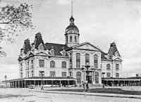
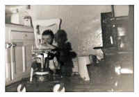
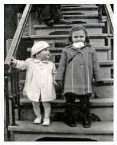
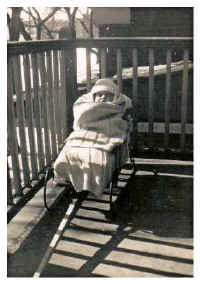
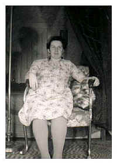
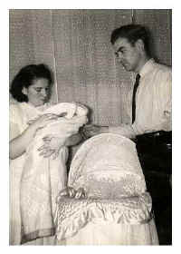
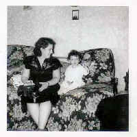
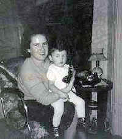

|
2179 LÉTOURNEUX,
MAISONNEUVE
En 1925, Charles et Ézilda emménagent au 2179 Létourneux.
Le
quartier Maisonneuve se développe à cette époque et on y construit beaucoup
de manufactures, de beaux édifices
publics, tels que le Marché Maisonneuve (1914), le Bain Public
Morgan (1915), des parcs, des cinémas, des commerces
et des nouveaux logements pour les ouvriers.
|

Marché Maisonneuve, 1930
Pour aller au
marché Maisonneuve, Ézilda descend la rue Létourneux vers le sud,
passe "à travers la track" (la voie ferrée) vers l,est
durant quelques dizaines de mètre et parvient au marché par
l'arrière. |

Bain public Morgan, boul.
Morgan
Ces bains
publics sont essentiels pour l'hygiène considérant que les logements
n'ont pas de bain (encore moins de douche), ni l'eau chaude. Ils sont
fréquentés par les hommes, les femmes préférant faire leur toilette
à la maison, "à la débarbouillette". |
Maisonneuve devient en effet un important pôle ouvrier au Canada, surnommé
le Pittsburgh du Canada en
raison de l'intense activité économique et culturelle qui y règne. Le travail
ne manque pas : les usines American Can Co, Dominion Textiles, J.P. Coats, Canadian
Steel Founderies, les cales sèches de la Canadian Vickers, les industries de la
chaussure ainsi que celles du secteur alimentaire constituent le gagne-pain de
milliers de familles du quartier.
Dans un petit logement modeste, Charles et Ézilda ont cinq enfants, dont
trois atteignent l’âge adulte, Arsène, Fabiola et Jacqueline. Pour chaque accouchement on répand de la
paille à terre et on y installe la femme en couches, ceci afin d’éviter de
souiller le lit. Plus tard (1947), Jacqueline accouchera de Nicole sur la table
de la cuisine, dans le même but.
Selon les actes de baptême de ses enfants, Charles exerce le métier de
journalier. Dans un acte il se déclare "huileur". Dans son acte de
mariage il s'était déclaré "plombier". Lors de son engagement dans
l'armée en 1914 il était inscrit comme "steam fiter". Donc, avec 8
ans de scolarité, Charles exerce plusieurs métiers pour gagner sa vie et celle
de sa famille. Les enfants quittent l'école après le primaire pour aider
leurs parents en leur versant une grosse portion de leur salaire, c'est-à-dire
"qu'ils payaient pension", ne gardant qu'un peu d'argent de poche. Les
filles préparaient leur "trousseau" en vue du jour où elles se
marieraient.
Ézilda vit plus de quarante ans au 2179 Létourneux. En fait,
ce logement n’a que trois petites pièces, en plus d’une minuscule salle de
toilette de quelques pieds carrés. Les
trois pièces se composent d’une cuisine, au fond du corridor, et d’un salon
double à l'entrée, du côté gauche. La première partie sert de salon
le jour, et de chambre des filles la nuit,
l'autre partie sert de chambre à Charles et Ézilda. Il n'y a même pas de porte dans ces deux pièces
tant l'espace est insuffisant.
La chambre des parents est si petite qu’il est impossible d’ouvrir les deux
derniers tiroirs de la commode qui se trouve au pied du lit. On y trouve le seul
garde-robe de tout le logement.
Des rideaux (un léger en voile et un plus lourd en velours) peuvent donner de
l'intimité entre les deux pièces, et ce selon les besoins et la saison.
Le garçon, Arsène, dort sur un lit pliant dans la cuisine. Le jour ce lit est
replié, tassé au mur, près de la laveuse à tordeurs. On recouvre le lit et
la laveuse de housses en tissu pour les dissimuler un peu.
Pas d’eau chaude, ni baignoire; les gens peuvent se rendre au Bain
Public pour se laver. Sinon, ils se lavent "à la débarbouillette".
Le chauffage
est fourni par le poêle à bois dans la cuisine. L’électricité assure l’éclairage, aussi Ézilda
utilise le terme "mon compte de lumière" en parlant de sa facture
d’électricité. La radio est le
seul divertissement qui vient de l’extérieur. Il
y en a une petite dans la cuisine, et un gros poste radio au salon.
Un petit rangement se trouve à l’extrémité de la
galerie arrière, et un hangar en bas au bout de la cour.
On y entrepose le bois de chauffage. Lorsque
Charles et Ézilda emménagent, les terrains à l’est de la rue
Létourneux (en arrière du Marché Maisonneuve) sont encore en friche.
Les Consigny, et leurs voisins, y font de grands potagers. Plus tard, la Canadian Steel Founderies achète ce terrain et le clôture
car des trains y circulent pour
livrer de la marchandise à l'usine.
Ézilda
change sa glacière pour un réfrigérateur seulement à la fin des années 1950.
Elle s'achète aussi une télévision, elle aime
beaucoup ce nouveau médium. Mais, quant aux autres objets modernes, c'est autre
chose: jusqu’à la fin de sa vie elle préfére utiliser ses fers à
repasser reçus en cadeau de mariage (cela en prenait deux, puisqu’il devait
toujours y en avoir un sur le feu du poêle pendant qu'elle se servait de l’autre), son
vieux grille-pain, etc… À son
décès, ses enfants ont retrouvé dans le bas du garde-robe, les cadeaux (fer à repasser électrique, poêlon électrique,
bouilloire, et autres), encore tout neufs dans leur
emballage.
Quand Ézilda fait un gâteau, elle mesure ses ingrédients avec toujours
la même
tasse à thé, s’assurant ainsi d’avoir toujours la même quantité.
Elle tapisse son moule de papier brun
découpé dans un sac d’épicerie
avant d'y verser sa pâte. (souvenir
de Nicole qui l'a vue à l'oeuvre plus d'une fois) Il
n'y a qu'une petite armoire de cuisine, et que l'essentiel, pas de papier ciré,
pas de tasse à mesurer, etc... L'ère de la consommation, puis de la
surconsommation n'est pas encore commencé...
Le seul confort moderne qu'
| PHOTOS DE LA
CUISINE (elles ne sont pas très bonnes, mais on peut voir
les détails des équipements ménagers disponibles, et la "marchette"
de Nicole) |
|
(on voit bien le dessus du poêle à bois, avec la
théière qui contient du thé chaud toute la journée et les autres
contenants d'eau servant à laver la vaisselle, le linge, etc...
Au-dessus du réchaud, au milieu, on retrouve la salière et la
poivrière. On voit bien aussi l'armoire double et le petit bout de
comptoir incluant un évier à gauche. Il n'y a qu'un tiroir pour les
ustensiles)
|

(on voit la chaudière à charbon, la poubelle, et ,
sur le comptoir, la boîte à pain et la machine à presser les agrumes)
|

Un matin de Pâques
(on voit la laveuse, et le lit pliant d'Arsène)
|

Nicole
(le lait est gardé au frais entre les 2 portes de la galerie arrière)
|
La rue
Ontario et ses magasins, le marché Maisonneuve sont tout près.
Elle s’approvisionne aussi auprès d’un "Juif" (un vendeur
itinérant) qui passe régulièrement aux maisons pour offrir à la ménagère
tout les effets indispensables Ce colporteur fait même crédit et Ézilda a un "compte" avec
lui, et ce durant des décennies. C’est
la seule forme de crédit disponible à cette époque, les femmes n’ayant aucun
accès personnel au crédit, les ouvriers non plus, d’ailleurs.
La vie quotidienne se déroule au rythme des
manufactures. Leurs sifflets, entendus par tout le voisinage,
marquent l’horaire des ouvriers
(arrivée le matin, midi, retour au
travail après dîner et fin du travail le soir). Sans oublier les cloches des églises qui sonnent les angélus
(matin,
midi et soir) et les cérémonies, ainsi que les trains qui circulent sur la
voie ferrée située tout près (un peu au nord de la rue
Ontario).
Le tout baigne dans différentes odeurs, dont celle de la réglisse (l’anis)
provenant de la manufacture de bonbons au coin de Rouen et Lasalle.
Le
marchand de glace monte un gros de bloc de glace , en laissant une traînée d’eau
derrière lui l’été. Le laitier et le boulanger font aussi régulièrement leur
tournée. Tous font leur travail avec des charrettes tirées par des chevaux, et ce
jusque dans le milieu des années 1950. On
livre aussi à la maison des liqueurs douces, Ézilda a une prédilection pour
le "kik", un breuvage de type cola.
La
radio occupe une place importante dès le milieu des années 1920.
Elle offre de l’information et du divertissement.
On trouve aussi dans le quartier de beaux cinémas, l’Orléans sur la rue
Ontario, le Mercier et le Granada sur la rue Ste-Catherine.
Ézilda et sa famille y vont régulièrement.
Une soirée au cinéma comprend le visionnement des actualités, d’un
court métrage et de deux à trois films. Dans
les années 1940 une chaîne de cinéma offre, en promotion publicitaire, pour quelques sous de plus que le billet d’entrée,
une pièce d’un service de vaisselle. Jacqueline peut ainsi ajouter à son trousseau de mariage un très beau
service de vaisselle de 18 couverts et les autres plats d’accompagnement (nous
avons encore cette vaisselle).
Plus tard, la télévision sera aussi très appréciée par Ézilda.
On ne connaît pas le moment de l’installation du téléphone , mais
elle l’a dans les années 1950 et son numéro est dans l’indicatif
"Lasalle". En 1963, selon
l'annuaire Lovell, son numéro est le 259-2201.
En fait, le quartier Maisonneuve est un quartier
ouvrier, canadien-français, de l’Est de Montréal.
"Aller magasiner dans l’ouest"
chez Eaton et Morgan’s est un événement spécial, un pèlerinage annuel qui se fait
habituellement une belle journée d'été. On
s’endimanche de son mieux pour cette sortie, chapeau et robe du dimanche, sans
oublier les accessoires, gants, souliers et sacoche, tous de couleur blanche
entre la St-Jean et la Fête du Travail, sinon de couleur foncée le reste de
l'année. On prend le tramway Ontario vers l’ouest.
La ligne est directe jusqu'au terminus situé à côté de la
Cathédrale anglicane entre les deux grands magasins. Ézilda
veille à ne pas "voyager à l’heure des travaillants" car les
tramways sont alors bourrés de gens.
 À noter que même pour aller magasiner sur la rue
Ontario tout près, les gens s’endimanchent. Lorsqu’Ézilda sort de chez-elle, elle "se met sur son 36".
En plus de changer de robe
(il n’est pas question d’aller sur la rue avec "une robe de
maison"),
elle se maquille.
Pour cela, elle ouvre une toute petite armoire-pharmacie placée dans la cuisine, entre la porte arrière et la
fenêtre (voir photo ci-contre).
Dans un des petits tiroirs se trouve son fard à joues en poudre et son
rouge à lèvres. Pour les appliquer correctement elle se sert d’un petit
miroir qu’elle accroche juste à côté, sur un clou posé à cet effet sur un
montant de la fenêtre de la
porte menant à la galerie arrière. Elle a ainsi un éclairage naturel pour se
"donner des couleurs" et paraître à son mieux en public. (souvenir
de Nicole qui l'a vue faire plus d'une fois) À noter que même pour aller magasiner sur la rue
Ontario tout près, les gens s’endimanchent. Lorsqu’Ézilda sort de chez-elle, elle "se met sur son 36".
En plus de changer de robe
(il n’est pas question d’aller sur la rue avec "une robe de
maison"),
elle se maquille.
Pour cela, elle ouvre une toute petite armoire-pharmacie placée dans la cuisine, entre la porte arrière et la
fenêtre (voir photo ci-contre).
Dans un des petits tiroirs se trouve son fard à joues en poudre et son
rouge à lèvres. Pour les appliquer correctement elle se sert d’un petit
miroir qu’elle accroche juste à côté, sur un clou posé à cet effet sur un
montant de la fenêtre de la
porte menant à la galerie arrière. Elle a ainsi un éclairage naturel pour se
"donner des couleurs" et paraître à son mieux en public. (souvenir
de Nicole qui l'a vue faire plus d'une fois)
|

André, Nicole
escalier avant
|

Nicole
balcon avant
|

Nicole, Gérard
portique avant
|

Jacqueline
(on voit la chambre derrière elle)
|
|

Jacqueline, Nicole, Gérard
(ils sont dans le salon, le rideau cachant la chambre est tiré)
|

Ézilda
(à sa gauche le poste de radio sur pied, puis, derrière le rideau, le
lit)
|

Jacqueline, Nicole
au salon
|

Jacqueline, Nicole
|
|
PHOTOS
PRISES PAR FRANCINE EN 2001 DE LA RUE LÉTOURNEUX |
|
 CHEZ
LES CONSIGNY
CHEZ
LES CONSIGNY